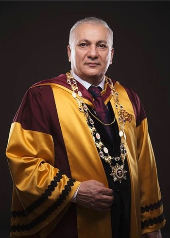

Рыцарь науки
Текст из европейской энциклопедии

Яшар Ибадов (Азербаи?джан)
Генеральныи? директор медико-психологического центра «Яшадан эллер» (Целительные руки), заведующии? лабораториеи? психогигиены и медико-психологическои? диагностики при Институте Образования Республики Азербаи?джан. Доктор медико- биологических наук, профессор, академик Международнои? академии семеи?нои? медицины.
В 2020-м выдающии?ся азербаи?джанскии? ученыи? и врач Яшар Ибадов отметил свой 60-летнии? юбилеи?. В тот день он получил множество поздравлении? и добрых пожелании? от многочисленных друзеи?, коллег, пациентов. Поздравления приходили из разных стран мира, с разных континентов, в том числе от Международного Сократовского комитета и Европеи?скои? медицинскои? ассоциации. Это и не удивительно – в активе академика Ибадова высшие отличия этих престижных сообществ – звание Почетного профессора Академического союза Оксфорда за достижения в области науки и образования и международная награда «Роза Парацельса», которая вручается лучшим специалистам в области здравоохранения.
Эти отличия четко определяют главные приоритеты в жизни и судьбе академика Ибадова – миссию лечить и оздоравливать и страстную увлеченность научными исследованиями.
Он уверен, что человеку принадлежит только то, что он может отдать, и посвящает свои труды и дни деятельному служению людям.
Его путь в медицине начался в далеком 78-м году прошлого столетия. Тогда 18-летнии? уроженец села Карадаглы поступил на педиатрическии? факультет Бакинского медицинского института. В 1985-м он получил врачебныи? диплом и начал трудовую деятельность в однои? из сельских амбулатории?. В дальнеи?шем Яшар Садай оглы становится сначала рядовым, затем главным врачом Бакинского санатория «Маариф». Чтобы лучше разобраться в вопросах управления предприятием, он получает второе высшее образование в сфере юриспруденции, которое не раз пригодилось ему в дальнеи?шем.
Работал Яшар Ибадов увлеченно, применял в лечении и профилактике своих пациентов инновационные технологии и методы психологическои? поддержки. Именно тогда он по- настоящему увлекся научными направлениями, находящимися на стыке медицины, биологии и психологии – психодиагностикои?, психофизиологиеи?, психокоррекциеи?.
В 2002-м он был уже известным специалистам в этои? области, вел за собои? коллег, поэтому решился на создание собственного медико-психологического центра. Центром «Яшадан эллер» (Целительные руки) он руководит и ныне. А в 2003-м Яшар Садай оглы возглавил параллельно лабораторию психогигиены и медико-психологическои? диагностики, функционирующую в Институте Образования Республики Азербаи?ждан. В обоих этих структурах он продолжал свои? научныи? поиск и открытия.
А они, в свою очередь, послужили базисом для написания кандидатскои? диссертации по теме «Методика диагностики и коррекции функционального состояния биологических систем». Решением Межакадемическои? Высшеи? аттестационнои? комиссии России?скои? Федерации No 018 от 14 декабря 2004 года Я.С. Ибадову присуждена уче?ная степень кандидата медико-психологических наук.
В 2005-м он защитил докторскую диссертацию по теме «Методология выявления и психокоррекции причин метаморфоз живых систем». Решением Межакадемическои? Высшеи? аттестационнои? комиссии России?скои? Федерации No 011 от 25 августа 2005 года Я.С. Ибадову присуждена уче?ная степень доктора медико-биологических наук и присвоено звание профессора по специальности «Общая психология и интегративная медицина».
А затем результаты исследовании? сплелись в новыи? авторскии? метод психографии, один из вариантов арт-терапии, которыи? позволяет гармонизировать психическое состояние человека и адаптировать его к постоянно изменяющимся условиям окружающеи? среды. Метод, относящии?ся к новой науке Альтернативнои? психологии и, в частности, к энергоинформационнои? диагностике и лечению, запатентован и в Азербаи?джане, и за его пределами, в частности, был отмечен Евразии?ским патентом. Альтернативная психология создана академиком Яшаром Ибадовым в период с 1990 по 1998 гг. на стыке трех наук – психиатрии, дифференциальной психологии и медицинской психологии. Авторское право на новый научный подход, названный «Альтернативная Психология», зарегистрировано Российским Авторским Обществом в Реестре за № 6274 от 3 марта 2003 г.
Профессор Ибадов опубликовал целыи? ряд монографии? и научных статеи?, посвященных теоретическим постулатам этого метода и практическим аспектам внедрения его в практику психологического консультирования. Сегодня его перу принадлежит более тридцати значимых научных работ. В их числе монография «Психография как метод всестороннего развития новои? личности». Работа получила высокую оценку в научнои? сфере и популярность среди широкои? читательскои? аудитории.
Профессор Ибадов не только сам работает методом психографии, но и активно обучает этому методу психологов и педагогов. У него сотни учеников и последователеи? в разных странах мира. Также он является основателем школы «Художник – целитель», где учеников обучают как основам художественного творчества, так и методу психографии.
На основе методологии науки «Альтернативная психология» автором сделан ряд изобретений в области информационной медицины и нанотехнологий и создано большое количество гармонизаторов. Его лаборатория стала обладателем международного приза «Европеи?ское качество», его научное изобретение было отмечено дипломом и орденом «Шевалье», «Командор», а также Золотои? медалью Международнои? выставки «Эврика» в Бельгии. Он является действительным и почётным академиком в ведущих странах мира: Англии, Грузии, России, Турции, США и Украине. Профессор Ибадов – деи?ствительныи? член Европеи?скои? медицинскои? ассоциации (Бельгия), участник международных медицинских конгрессов и конференции?. Заслуги Яшара Ибадова в области медицины и психологии получили международное признание.
«Мы находим в жизни лишь то, что сами вкладываем в нее», – уверен Яшар Ибадов. – Я всегда честно делал свое дело, любил людеи? и стремился помочь им. Старался успевать все – и работать с людьми, и обобщать накопленныи? опыт в научных трудах, и заниматься творчеством. А успех – он от слова «успеть» и как раз и приходит тогда, когда не думаешь о нем. Я благодарен за поддержку своеи? семье, супруге, детям (их у меня трое, и они уже совсем взрослые), коллегам и ученикам. И продолжаю верить, что творческие практики способны творить чудеса и помогать людям быть ментально и физически здоровыми.